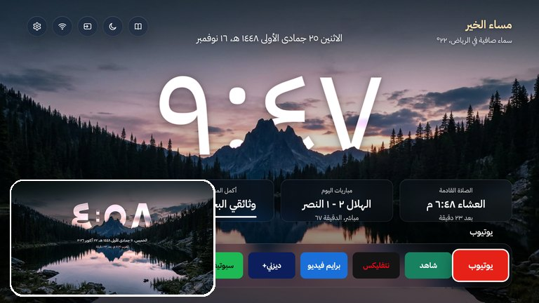

المظهر
التركيز يعرض الشكل خلف اللوحة، وموافق يثبّته، ورجوع يرجّع شكلك
رجّع الشكل السابقشكلك المعتاد، قبل دقيقتين
أشكال جاهزة

شكلك المعتاد

منظر وساعة الحالي

صورة فقط
كل جزء وحده
التخطيطكنبة
الخلفيةالآفاق
الساعةزجاجية خلف الصورة
شكل التطبيقاتأيقونات
صف واحد أول اللوحة، يظهر فقط بعد تغيير الشكل ويبقى حتى تغيّره مرة ثانية. يرجّع الشكل كله كما كان (التخطيط والخلفية والساعة والتطبيقات والبطاقات)، بلا رسالة منبثقة